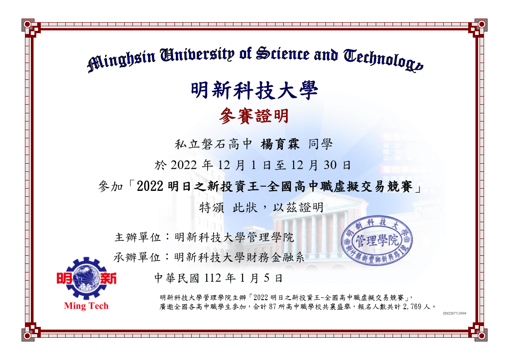
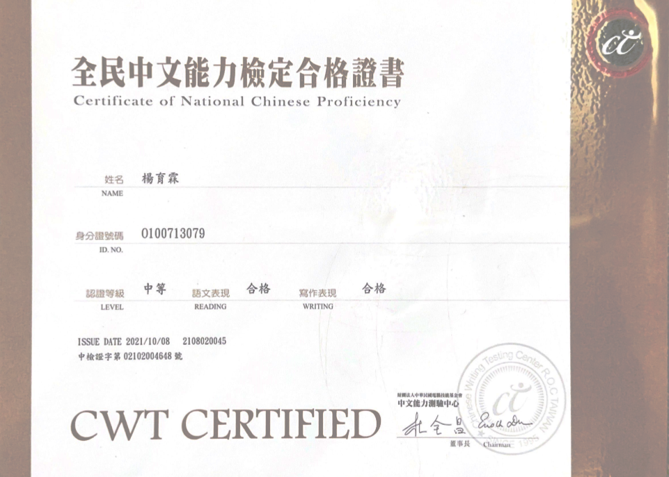
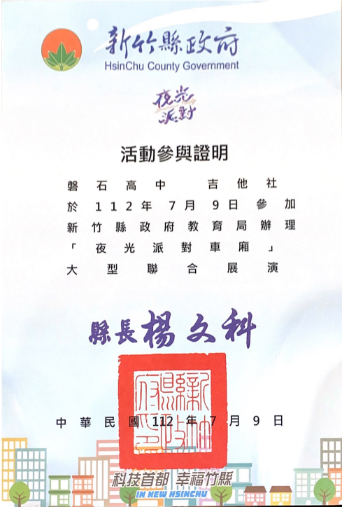

關於我
大家好，我是楊育霖，朋友都叫我ㄌㄌ，目前就讀中原大學資訊管理學系。
我對科技、程式與實作特別有熱情，喜歡把想法透過程式碼或工具變成真正能運作的東西。最近我主要在學Unity以及像素美術，正在試著獨立開發一款像素風格的卡牌遊戲，從圖片動畫、敵人AI等等，我都一步一步親手嘗試。雖然常常遇到bug，但我反而很享受解決問題的過程。
我是那種遇到不會的東西就會自己查、自己試，到弄懂為止的人。做作業、寫專案、或寫程式時，我會習慣拆解問題、找出邏輯，讓複雜的事變得清楚。 在團隊合作上，我也很重視溝通，希望能讓整個小組的效率和成果都變得更好。
未來，我希望能在資訊技術或遊戲開發的領域中找到自己的位置，不管是做系統、做資料分析，或是做遊戲，我都希望能持續學習、持續成長，也期待能和更多同樣熱愛技術的人一起合作。個人經歷
以下三張圖片為我高中階段參與活動、技能檢定與課程所取得的證照與證書。
它們象徵了我在不同領域中的投入與成果，我也特別挑選了對自身意義較深的三張，以呈現當時的經驗與收穫。


